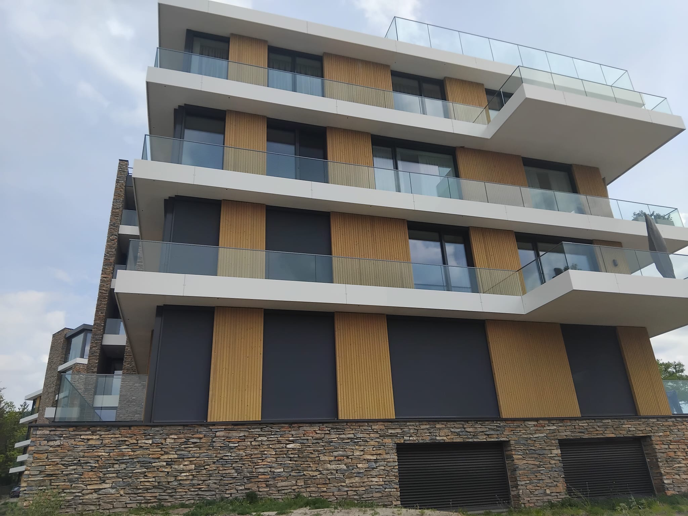

Timerwerk
Houtconstructies en maatwerk in delen die zichtbaar netjes moeten samenkomen.
Diensten
Het werk is praktisch en bouwplaatsgericht: houtconstructies, prefab, kozijnen, gevelsystemen en details die bepalen of het eindbeeld strak oogt of onrustig blijft.

Houtconstructies en maatwerk in delen die zichtbaar netjes moeten samenkomen.
Prefab wand- en dakelementen met aandacht voor passing, tempo en nette aansluiting.
Montage van kozijnen en openingen met oog voor detail, lijnen en randafwerking.
Gevels in houtlook materiaal, HPL, Rockpanel en composiet met een rustig ritme.
Uitvoering van schuine dakopbouwen en aansluitingen binnen de bredere timmer scope.
Gipswanden, plafonds, schilderwerk, vloeren en interieurafwerking waar het project dat vraagt.
Werkwijze
Geen ingewikkeld proces, wel een heldere manier van werken die goed past bij bouwprojecten.
Tekeningen, gewenste afwerking, maatvoering en projectcontext worden eerst goed gelezen.
Prefab logica, kozijnen, naden en materiaalovergangen worden vooraf gecontroleerd.
De uitvoering richt zich op passing, ritme en een zichtbaar nette afwerking op locatie.
Samengevat
De kortste route is een telefoontje. De rest van de site laat vooral zien hoe dat werk er in de praktijk uitziet.